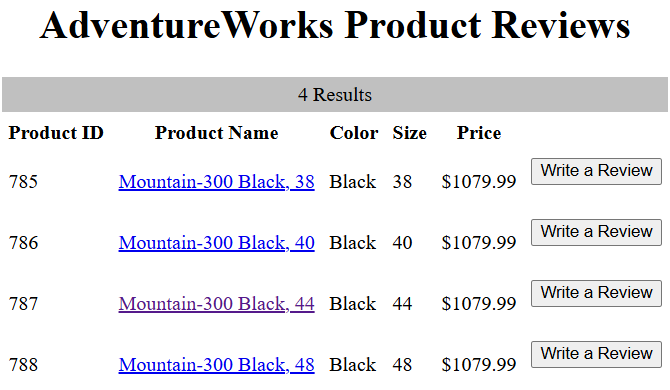

AdventureWorks on AWS
I deployed the course's PHP app and SQL Server database on two EC2 servers, then searched the catalog and saved a review through it.
- Status
- May 2026
- Source
- SVAD 111 repository
Result A working two-server deployment: a blank search returned 304 products, a product page loaded and a submitted review appeared in the app.
On this page
I launched both servers, installed and configured the database and web tiers, fixed the connection between them and tested the result. The course provided the app, the data and the two-server design.
- AWS EC2
- Ubuntu 22.04
- Apache
- PHP 8.1
- Microsoft SQL Server and sqlcmd
- PuTTY and WinSCP
I deployed the course's AdventureWorks product-review app on two Ubuntu servers in an AWS Academy lab: Apache and PHP on one, Microsoft SQL Server with the AdventureWorks catalog on the other. By the end the site searched the catalog, opened product pages and saved reviews to the database.
The course provided the app, the data, the two-server design and the install commands for each milestone. I launched the servers, ran the installs, imported the data, connected the two tiers, tested the app and wrote the final report.
Architecture and connection paths
- BrowserSearch catalog, open product, submit reviewHTTP · TCP 80
- Web instanceUbuntu 22.04
Apache + PHP 8.1
SQL Server PHP driversSQL connection · TCP 1433 - Database instanceUbuntu 22.04
Microsoft SQL Server
AdventureWorks databaseCatalog and review storage
The browser only talks to the web server. PHP connects to SQL Server through the database server's internal address in config.php, so the security-group rule, the database login and the PHP drivers all sit on the path every page request takes.
Server setup
I used PuTTY for shells and WinSCP to move the course's archives onto the servers. On the database server I added Microsoft's signing key and package repository, installed SQL Server 2022 and the sqlcmd client, and ran a test query with my name. On the web server I installed Apache, PHP 8.1 and Microsoft's ODBC driver and PHP extensions.
I checked each layer before building on it: row counts for the import, a test.php page for PHP, then the app's pages for the connection between the servers.
Database and application configuration
Adapting the data import for Linux
The course's data archive was built for Windows. Milestone 2B's steps converted the import script from UTF-16 to UTF-8, pointed it at the data folder, removed its CODEPAGE lines and changed the row terminator to match the data files' Windows line endings:
iconv -f UTF-16 -t UTF-8 instawdb.sql.orig > instawdb.sql
sed -i -e /CODEPAGE/d instawdb.sql
sed -i -e 's/\\n/\\r\\n/' instawdb.sql
Those are the milestone's commands; my submission shows the finished import rather than each step. I checked it with two counts in sqlcmd:
SELECT COUNT(*) FROM Production.Product;
GO
SELECT COUNT(*) FROM Person.Person;
GO
They returned 504 products and 19,972 people.
Connecting PHP to SQL Server
I enabled the sqlsrv and pdo_sqlsrv extensions, set Apache to the prefork module with the PHP module, and loaded test.php, which showed PHP 8.1.2 running under Apache. Then I copied the app into /var/www/html, set the database address and login in config.php, and removed Apache's default index.html so the app's page loads first. Credentials and addresses are left out here.
Troubleshooting
My final report lists four problems and what fixed them:
- The web server timed out reaching the database. The security group didn't allow SQL Server traffic, so I added a rule for port 1433 from the web server, and the catalog loaded. In the report: "Connection Timed Out: The web server could not talk to the database."
- The SQL login failed even with the right password. I enabled SQL Authentication in the SQL Server setup.
- Microsoft's packages weren't found. I added Microsoft's signing key and repository, and the installs went through.
- PuTTY couldn't reach EC2. The network I was on blocked outbound SSH, so I switched to a hotspot.
Testing the result
| Check | Result |
|---|---|
Row counts in sqlcmd |
Production.Product 504, Person.Person 19,972 |
test.php |
PHP 8.1.2 running under Apache |
| Search with no term | 304 catalog results |
| Search for Mountain-300 | Four products, 785 to 788 |
| Open product 787 | Mountain-300 Black, 44, with its picture |
| Submit a review | My review appeared in the app with my name, a rating of 3 and "This is a good bike." |


Limits and what I'd change
- I tested the import counts and the app actions above. I didn't test database integrity, whether reviews survive a restart, load or recovery.
- The site ran on HTTP. My report recommended HTTPS, user accounts for reviewers and photo uploads; none of them were built.
- The milestone's instructions opened SSH and HTTP to any address and added rules for ports 1433 and 3306, and my last screenshot shows those four. The app only used SQL Server.
- The app connected as SQL Server's
SAaccount, and the milestones trusted the database certificate for lab setup, so there's no least-privilege login or verified database TLS. test.phpshowed PHP's configuration, and my files don't show it being removed.
For a real deployment I'd restrict administration and database access first, give the app its own database login, remove the test page, add HTTPS and test recovery.
Sources
- Final report, May 8, 2026: screenshots, the problems and fixes, app tests and recommendations
- Module 03 milestone: the two EC2 instances
- Module 05 milestones: SQL Server install, the import and the query output
- Module 07 milestones: security-group rules, Apache and PHP, and the app tests